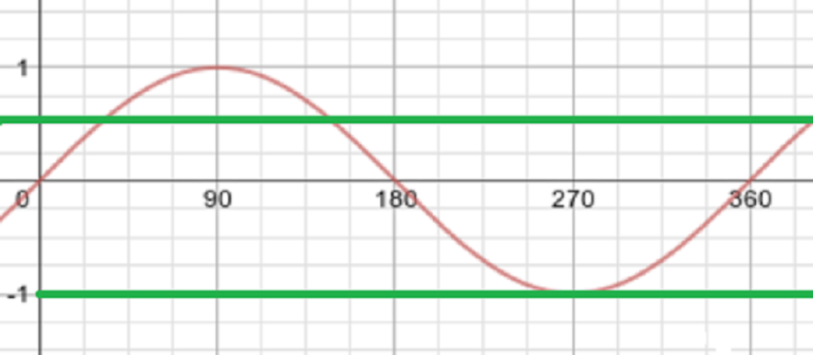
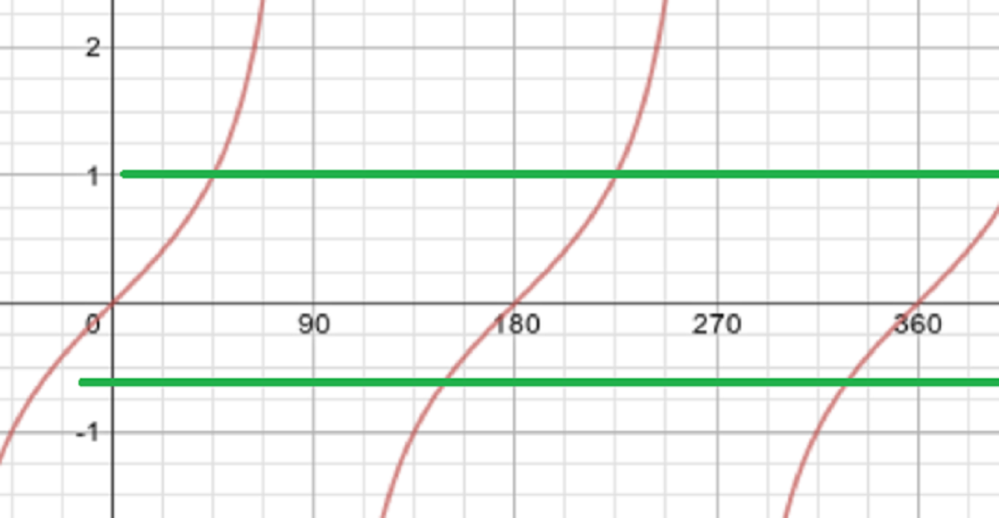

- Prove the identity
cosθ−2cos3θ+cos5θ=2sinθ(sin2θ−sin4θ).
We can always write the expressions cosA+cosB,cosA−cosB,sinA+sinB, and sinA−sinB as the product of two sin/cos terms.
This can be immensely useful to us in lots of situations. Here we are interested in cosA−cosB.
We begin with cos(X+Y)=cosXcosY−sinXsinYandcos(X−Y)=cosXcosY+sinXsinY.
Adding these equations gives cos(X−Y)−cos(X+Y)=2sinXsinY.
Now setting A=X−Y,B=X+Y we find cosA−cosB=2sinA+B2sinB−A2.
Applying this to both cosθ−cos3θ and cos5θ−cos3θ, we see the left-hand side (LHS) is equal to 2sin2θsinθ+2sin4θsin(−2θ)=2sinθ(sin2θ−sin4θ),
as required.
Alternatively, we can show by expanding that if c=cosθ,s=sinθ, then cos(3θ)=4c3−3c,cos(5θ)=16c5−20c3+5c,sin(2θ)=2sc,sin(4θ)=8sc3−4sc.
Now the LHS is c−2(4c3−3c)+16c5−20c3+5c=16c5−28c3+12c,
while the RHS is 2s(2sc−(8sc3−4sc))=2(1−c2)(−8c3+6c)=16c5−28c3+12c,
which are the same, and so we are done.
Solve the equations
cos2x=sinx,
3sec2x=tanx+5
giving in each case all solutions between 0∘ and 360∘.
- For the first equation, we use one of the double angle formulae for cos, that’s cos2x=1−2sin2x.
Now everything’s written in terms of sinx, which makes the equation much simpler.
Writing u=sinx, we have to solve the equation cos2x=sinx, which gives 1−2u2=u, or2u2+u−1=0, or(2u−1)(u+1)=0,
with solutions sinx=u=12,−1.
We need all solutions between 0∘ and 360∘. These are x=30∘,150∘,270∘.
It’s helpful to sketch a graph, to check we’ve got all the solutions.

- For the second, recall the identity tan2x+1=sec2x (given by dividing sin2x+cos2x=1 by cos2x).
Define v=tanx, so we need to solve
3sec2x=tanx+5, or3(1+v2)−v−5=0, or3v2−v−2=0.
This is (3v+2)(v−1)=0, so v=−23,1, which (since tanx has period π) gives the four solutions x=45∘,225∘,146.3∘,326.3∘.
